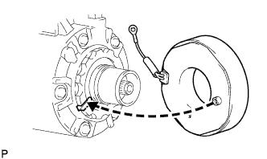
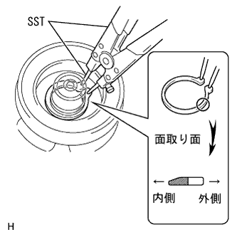
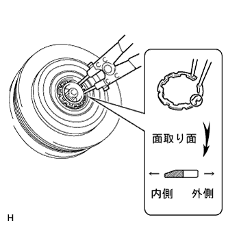
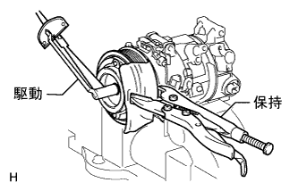
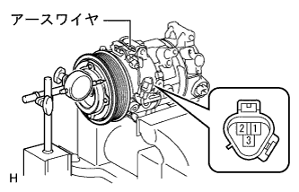
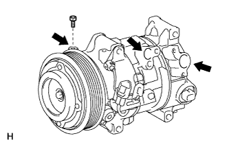

Cooler Compressor Assembly (Engine Type 2GR-FE) Reassembly |
| 1. Install Magnetic Clutch Assembly |
Secure the cooler compressor assembly in a vise with aluminum plates.
 |
Install the magnetic clutch stator aligned with the position on the cooler compressor assembly shown in the illustration.
 |
Using SST, install a new snap ring with its chamfered side facing up.
 |
Connect the ground wire with the screw and install the bracket.
Engage the clamp.
Connect the connector.
Install the magnetic clutch rotor to the cooler compressor assembly.
 |
Using SST, install a new snap ring with its chamfered side facing up.
Temporarily install the magnetic clutch washers and magnetic clutch hub to the cooler compressor assembly with the bolt.
 |
Using vise pliers, hold the magnetic clutch hub and fully tighten the bolt.
| 2. Inspect Magnetic Clutch Air Gap |
 |
Set a dial indicator perpendicular to the magnetic clutch hub.
Connect battery positive (+) to terminal 3 of the magnetic clutch connector and battery negative (-) to the ground wire, turn the magnetic clutch ON and OFF, and measure the air gap when it is OFF.
If it is not within the standard, remove the magnetic clutch hub and adjust by changing the number of magnetic clutch washers
Remove the cooler compressor w/ magnetic clutch assembly from the vise.
| 3. Compressor Oil Level Inspection |
 |
When replacing with a new cooler compressor assembly, gradually release the inert gas (helium) from the service valve, then drain the amount of oil shown below from the position indicated by the arrow in the illustration before installation.